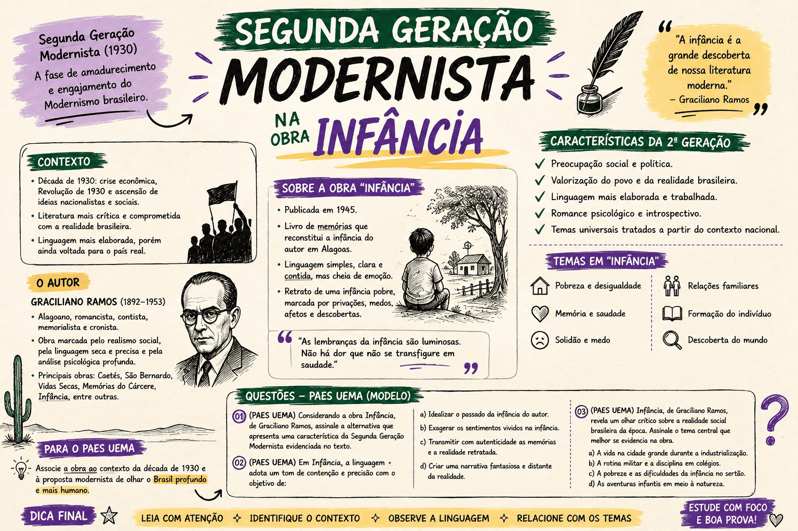

Segunda Geração Modernista e Infância: Questões para o PAES UEMA 2027
Para dominar a prova de Literatura do PAES UEMA 2027, é imprescindível compreender as características da Segunda Geração Modernista (também conhecida como Geração de 30) e como elas se materializam na obra Infância, de Graciliano Ramos. Este período literário marcou uma virada profunda na literatura brasileira, abandonando o tom destrutivo e bem-humorado da fase heroica de 1922 para assumir uma postura madura, crítica e engajada.
Nesta página, revisaremos os pilares do Romance de 30 e como Graciliano Ramos utiliza suas memórias de menino para tecer uma dura denúncia das estruturas sociais, familiares e educacionais do Nordeste. Em seguida, você testará seus conhecimentos com 15 questões inéditas baseadas no texto, acompanhadas de gabarito comentado.

A Geração de 30 e a Obra de Graciliano Ramos
A Segunda Geração Modernista consolidou a ficção nacional voltando os olhos para a realidade crua do Brasil. Em Infância, embora seja um livro de memórias, Graciliano Ramos emprega todos os recursos estéticos e ideológicos desse movimento literário.
Características Principais na Obra
- Regionalismo e Neorrealismo: A obra não foca no exotismo do Nordeste, mas na sua realidade opressiva. A seca, o calor, a miséria e as relações rústicas não são apenas cenários, mas forças que moldam e embrutecem o caráter dos personagens.
- Introspecção Psicológica: O foco narrativo debruça-se sobre a mente do menino. Acompanhamos o desenvolvimento de sua consciência esmagada pelo medo, a dificuldade de compreender o mundo adulto e a repressão dos seus sentimentos.
- Estilo Enxuto (Secura): A linguagem de Graciliano é contida, exata e desprovida de sentimentalismo exagerado. A secura do clima sertanejo reflete-se na secura das palavras e das relações humanas.
- Crítica Social (Determinismo e Autoritarismo): O livro denuncia o patriarcalismo abusivo (a figura do pai violento), a educação punitiva (a escola como aparelho de tortura física e mental) e as injustiças de classe (a miséria dos caboclos e ex-escravos).
Em resumo: O Menino e o Meio
Em Infância, o menino Graciliano é uma vítima de um triplo autoritarismo: o familiar (pais distantes e punitivos), o educacional (escolas e cartilhas que não libertam, mas castigam) e o social (um Nordeste hierarquizado e violento). A Geração de 30 expõe o indivíduo que tenta sobreviver em um meio hostil.
Estratégia para o PAES UEMA
Fique muito atento aos episódios que ilustram o abuso de poder (como a surra do cinturão ou a prisão do mendigo Venta-Romba). A banca da UEMA adora relacionar esses episódios com as características do Neorrealismo, exigindo que o candidato identifique a ironia do autor adulto ao narrar as injustiças que sofreu ou presenciou quando criança.
Questões sobre a Segunda Geração Modernista em Infância
15 questões inéditas baseadas em fragmentos da obra
Questão 1 — Autoritarismo e Patriarcalismo
"Onde estava o cinturão? A pergunta repisada ficou-me na lembrança: parece que foi pregada a martelo. [...] Ninguém me acusava, ninguém me bulia a consciência. [...] Foi esse o primeiro contacto que tive com a justiça."
Ao relatar a surra que levou do pai, o narrador associa ironicamente o castigo físico à ideia de "justiça". Essa postura do autor reflete qual traço marcante da Segunda Geração Modernista?
Questão 2 — O Meio Social e o Neorrealismo
"As nascentes secavam, o gado se finava no carrapato e na morrinha. [...] O homem agreste murmurava uma confissão lamentosa..."
A descrição da seca e da ruína econômica da fazenda impactando diretamente o humor e as atitudes do pai ilustra a influência do meio sobre o indivíduo, característica do Romance de 30 fortemente associada ao:
Questão 3 — Introspecção Psicológica
"Achava-me num deserto. A casa escura, triste; as pessoas tristes. Penso com horror nesse ermo, recordo-me de cemitérios e de ruínas mal-assombradas."
A representação do ambiente familiar pelo olhar da criança evidencia um traço fundamental da prosa gracilianense. Assinale a alternativa correta sobre esse aspecto:
Questão 4 — A Educação Repressiva
"O professor não tinha lugar definido na sociedade. [...] Segurava a palmatória como se quisesse derrubar com ela o mundo. E nós, meia dúzia de alunos, tremíamos da cólera maciça..."
A experiência escolar relatada na obra desconstrói a ideia tradicional de educação. Para a Geração de 30, esse tipo de relato serve para:
Questão 5 — O Estilo Enxuto
"Minha mãe tinha a franqueza de manifestar-me viva antipatia. Dava-me dois apelidos: bezerro-encourado e cabra-cega."
Graciliano narra a hostilidade materna sem utilizar exclamações dramáticas ou apelos emocionais fáceis. Essa contenção estilística é conhecida na literatura como:
Questão 6 — A Descoberta da Injustiça Social
"O soldado ergueu-lhe a camisa... empunhou aquela ruína que tropeçava... ganhou a rua. Fui postar-me na calçada, sombrio, um aperto no coração. [...] Testemunhara uma iniqüidade e achava-me cúmplice."
O episódio da prisão arbitrária do mendigo Venta-Romba marca o despertar da consciência social do menino. Na Geração de 30, esse episódio exemplifica:
Questão 7 — O Refúgio na Imaginação
"Era como se me fechassem uma porta, porta única, e me deixassem na rua, à chuva, desgraçado, sem rumo. [...] Chorei muito. E não me atrevi a ler O Menino da Mata e o seu Cão Piloto."
A interdição da leitura do folheto (considerado "pecado" ou "coisa ruim") representa para a criança:
Questão 8 — A Memória Inconfiável
"A primeira coisa que guardei na memória foi um vaso de louça vidrada... Ignoro onde o vi, quando o vi, e se uma parte do caso remoto não desaguasse noutro posterior, julgá-lo-ia sonho."
O início de Infância demonstra como Graciliano Ramos trata a recuperação do passado. Para o autor, a memória é:
Questão 9 — Relações de Classe e Resquícios da Escravidão
"Cativeiro já se acabou, dona. Se eu morrer na cozinha de Seu Pedro Ferro, não me salvo."
A fala de Vitória, mulher agregada à fazenda, expõe um tema recorrente na obra de Graciliano e na Geração de 30, que é:
Questão 10 — A Hipocrisia Religiosa
"...furava os braços da humanidade na vila e circunvizinhança. Os sertanejos não queriam meter a desgraça no corpo... Mas aquela autoridade franzina usava despotismo..."
A figura do Padre João Inácio vacinando a população de forma brutal e xingando os sertanejos é usada pelo autor para ilustrar:
Questão 11 — A Dor e a Palavra
"Condenaram-me à tarefa odiosa... O folheto se puía e esfarelava, embebia-se de suor, e eu o esfregava para abreviar o extermínio. [...] E as duas consoantes inimigas dançavam: d. t."
O doloroso processo de alfabetização de Graciliano evidencia uma reflexão metalinguística comum aos modernistas, que é:
Questão 12 — O Regionalismo Crítico
"Eu nasci de sete meses, / Fui criado sem mamar. / Bebi leite de cem vacas / Na porteira do curral"
A cantiga entoada pelo vaqueiro José Baía insere o elemento cultural nordestino na obra. A Segunda Geração Modernista utiliza esse regionalismo para:
Questão 13 — A Opressão Feminina
"Mocinha casou silenciosamente, sem música e sem dança, na missa das sete. E teve alguns anos de equilíbrio e felicidade. [...] Miguel abandonou-a..."
A trajetória de Mocinha (irmã natural do narrador) sublinha outro aspecto crítico explorado pelo autor, que é:
Questão 14 — Construção Narrativa
"A casa escura, triste; as pessoas tristes."
O uso de frases nominais curtas e de repetições (como "triste"), formando uma sintaxe quase "cortada", é a marca registrada do autor para gerar o seguinte efeito:
Questão 15 — A Geração de 30 no Vestibular
Considerando o contexto global da obra Infância e os preceitos da Geração de 30, assinale a afirmativa correta sobre a relação entre o narrador e o passado:
Como interpretar seu resultado?
De 13 a 15 acertos — excelente preparação
Seu entendimento sobre o Romancismo de 30 está consolidado. Você consegue conectar a denúncia social ao estilo seco e psicológico de Graciliano Ramos.
De 10 a 12 acertos — bom desempenho
Você tem uma boa base sobre a história do menino, mas preste atenção na terminologia literária (Neorrealismo, Determinismo). É essencial saber vincular os atos dos personagens às escolas literárias.
De 6 a 9 acertos — desempenho intermediário
Você provavelmente está lendo o livro apenas como uma "história triste". Lembre-se: no vestibular, a dor do menino representa a crítica de toda uma geração aos problemas estruturais do Brasil.
Até 5 acertos — reforce a base
Retorne ao resumo teórico desta página! Compreender o conceito de "determinismo social" e de "opressão patriarcal" é a chave mestre para destravar as questões sobre Graciliano Ramos na UEMA.
Erros que merecem atenção na prova
- Saudosismo x Realismo: Jamais assinale alternativas que digam que Graciliano lembra da infância com saudade, doçura ou idealização poética. O resgate da memória é amargo, crítico e doloroso.
- Escola Literária: Não confunda a Segunda Geração Modernista (fase de consolidação, neorrealista e engajada, a partir de 1930) com a Primeira Geração (Semana de 22, focada na destruição do passado acadêmico e na piada).
- Foco Psicológico: Lembre-se de que a obra é contada pelo adulto lembrando-se do menino, mas as sensações narradas são as da criança assustada, filtradas pelo raciocínio afiado do escritor maduro.
Conclusão
Estudar Infância no contexto da Segunda Geração Modernista é um exercício de compreensão do próprio Brasil. Graciliano Ramos não escreveu apenas a biografia de um menino assustado, mas redigiu o testamento de uma sociedade adoecida pelo autoritarismo, pela falta de comunicação e pela dureza da seca e da miséria. No PAES UEMA 2027, as questões certamente cruzarão os episódios narrados com essa violenta paisagem social que a Geração de 30 ousou revelar.
Conteúdos relacionados
Explore Outros Conteúdos
Continue seus estudos acessando outras seções do site Mestre Kira: